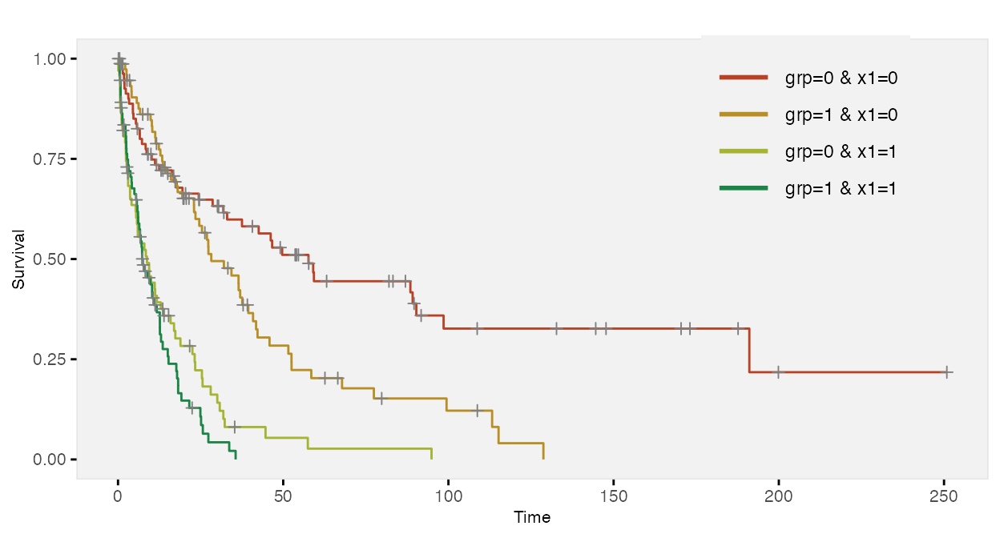

Time-to-event data, including both survival and censoring times, are created using functions defSurv and genSurv. The survival data definitions require a variable name as well as a specification of a scale value, which determines the mean survival time at a baseline level of covariates (i.e. all covariates set to 0). The Weibull distribution is used to generate these survival times. In addition, covariates (which have been defined previously) that influence survival time can be included in the formula field. Positive coefficients are associated with longer survival times (and lower hazard rates). Finally, the shape of the distribution can be specified. A shape value of 1 reflects the exponential distribution.
The density, mean, and variance of the Weibull distribution that is used in the data generation process are defined by the parameters \(\lambda\) (scale) and \(\nu\) (shape) as shown below.
\[\begin{aligned} f(t) &= \frac{t^{\frac{1}{\nu}-1}}{\lambda \nu} exp\left(-\frac{t^\frac{1}{\nu}}{\lambda}\right) \\ E(T) &= \lambda ^ \nu \Gamma(\nu + 1) \\ Var(T) &= (\lambda^2)^\nu \left( \Gamma(2 \nu + 1) - \Gamma^2(\nu + 1) \right) \\ \end{aligned}\]The survival time \(T\) data are generated based on this formula:
\[ T = \left( -\frac{log(U) \lambda}{exp(\beta ^ \prime x)} \right)^\nu, \]
where \(U\) is a uniform random variable between 0 and 1, \(\beta\) is a vector of parameters in a Cox proportional hazard model, and \(x\) is a vector of covariates that impact survival time. \(\lambda\) and \(\nu\) can also vary by covariates.
Here is an example showing how to generate data with covariates. In this case the scale and shape parameters will vary by group membership.
# Baseline data definitions
def <- defData(varname = "x1", formula = 0.5, dist = "binary")
def <- defData(def, varname = "x2", formula = 0.5, dist = "binary")
def <- defData(def, varname = "grp", formula = 0.5, dist = "binary")
# Survival data definitions
set.seed(282716)
sdef <- defSurv(varname = "survTime", formula = "1.5*x1", scale = "grp*50 + (1-grp)*25",
shape = "grp*1 + (1-grp)*1.5")
sdef <- defSurv(sdef, varname = "censorTime", scale = 80, shape = 1)
sdef## varname formula scale shape
## 1: survTime 1.5*x1 grp*50 + (1-grp)*25 grp*1 + (1-grp)*1.5
## 2: censorTime 0 80 1The data are generated with calls to genData and genSurv:
# Baseline data definitions
dtSurv <- genData(300, def)
dtSurv <- genSurv(dtSurv, sdef)
head(dtSurv)## id x1 x2 grp survTime censorTime
## 1: 1 0 0 1 9.206 95.976
## 2: 2 0 1 0 25.525 46.754
## 3: 3 0 1 0 604.203 31.620
## 4: 4 1 1 0 23.631 338.427
## 5: 5 1 0 0 108.276 287.553
## 6: 6 0 1 1 8.122 53.406## grp x1 V1
## 1: 0 0 156.2
## 2: 0 1 19.0
## 3: 1 0 43.3
## 4: 1 1 14.1Observed survival times and censoring indicators can be generated by defining new fields:
cdef <- defDataAdd(varname = "obsTime", formula = "pmin(survTime, censorTime)", dist = "nonrandom")
cdef <- defDataAdd(cdef, varname = "status", formula = "I(survTime <= censorTime)",
dist = "nonrandom")
dtSurv <- addColumns(cdef, dtSurv)
head(dtSurv)## id x1 x2 grp survTime censorTime obsTime status
## 1: 1 0 0 1 9.206 95.976 9.206 TRUE
## 2: 2 0 1 0 25.525 46.754 25.525 TRUE
## 3: 3 0 1 0 604.203 31.620 31.620 FALSE
## 4: 4 1 1 0 23.631 338.427 23.631 TRUE
## 5: 5 1 0 0 108.276 287.553 108.276 TRUE
## 6: 6 0 1 1 8.122 53.406 8.122 TRUE
# estimate proportion of censoring by x1 and group
dtSurv[, round(1 - mean(status), 2), keyby = .(grp, x1)]## grp x1 V1
## 1: 0 0 0.51
## 2: 0 1 0.13
## 3: 1 0 0.37
## 4: 1 1 0.17Here is a Kaplan-Meier plot of the data by the four groups:

Here is a survival analysis (using a Cox proportional hazard model) of a slightly simplified data set:
# Baseline data definitions
def <- defData(varname = "x1", formula = 0.5, dist = "binary")
def <- defData(def, varname = "x2", formula = 0.5, dist = "binary")
# Survival data definitions
sdef <- defSurv(varname = "survTime", formula = "1.5*x1 - .8*x2", scale = 50, shape = 1/2)
sdef <- defSurv(sdef, varname = "censorTime", scale = 80, shape = 1)
dtSurv <- genData(300, def)
dtSurv <- genSurv(dtSurv, sdef)
cdef <- defDataAdd(varname = "obsTime", formula = "pmin(survTime, censorTime)", dist = "nonrandom")
cdef <- defDataAdd(cdef, varname = "status", formula = "I(survTime <= censorTime)",
dist = "nonrandom")
dtSurv <- addColumns(cdef, dtSurv)
coxfit <- survival::coxph(Surv(obsTime, status) ~ x1 + x2, data = dtSurv)The 95% confidence intervals of the parameter estimates include the values used to generate the data:
| Characteristic | log(HR)1 | 95% CI1 | p-value |
|---|---|---|---|
| x1 | 1.5 | 1.2, 1.8 | <0.001 |
| x2 | -1.0 | -1.2, -0.70 | <0.001 |
|
1
HR = Hazard Ratio, CI = Confidence Interval
|
|||